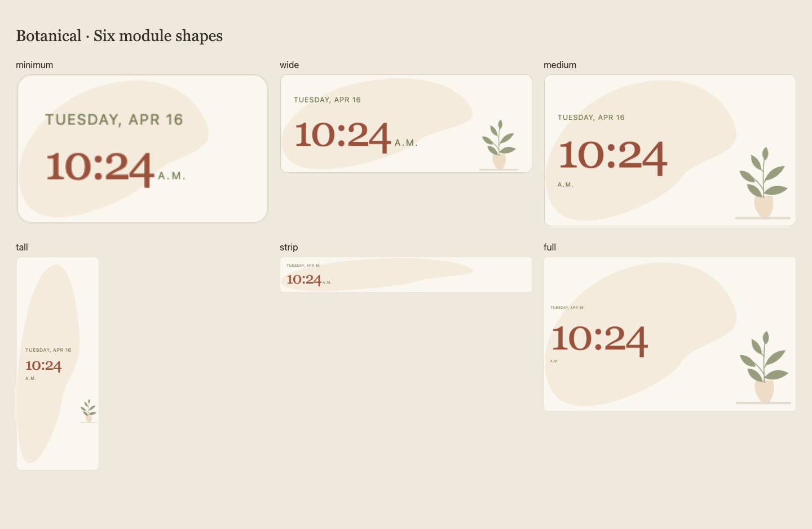
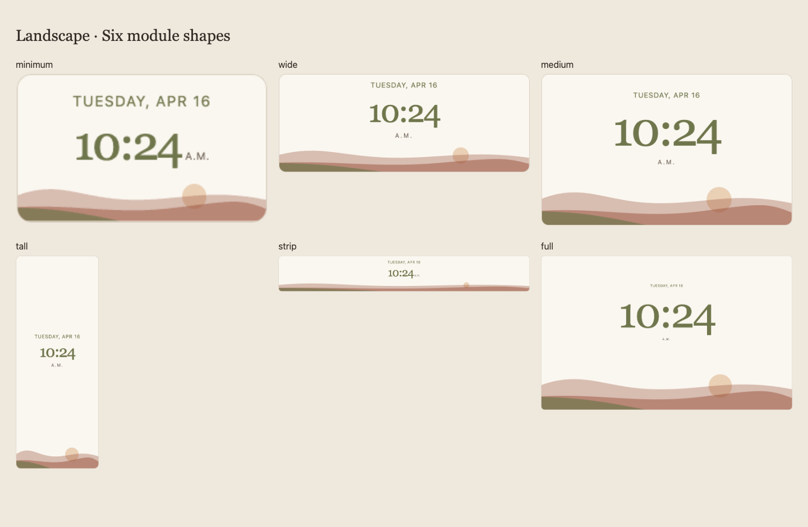
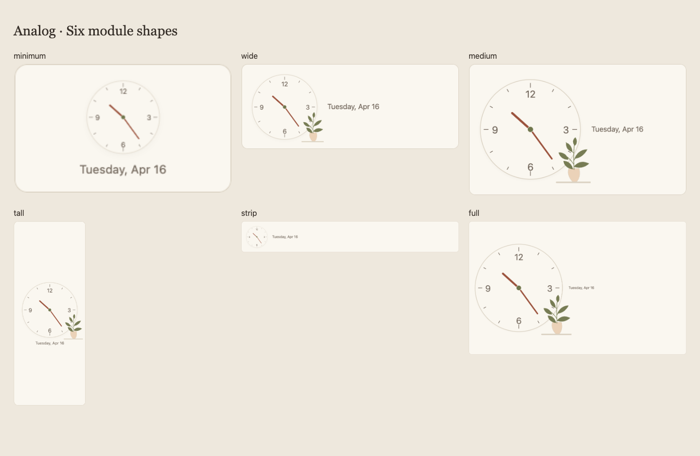
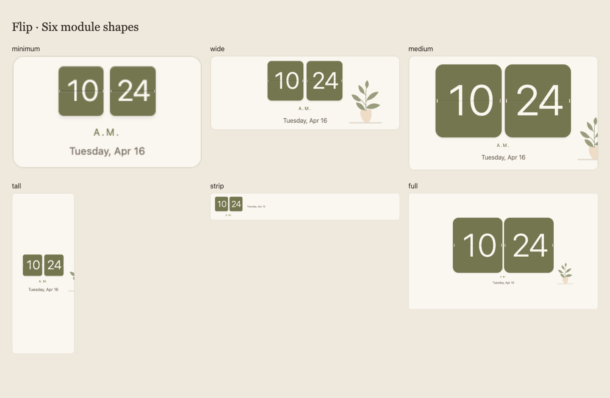

The concepts have character. The implementations still need composition.
The four clocks are a recognizable first pass, but they do not yet carry the richness or balance of the approved artwork. Botanical is the weakest interpretation; Flip is the closest. I treated successful rendering and functional tests as stronger evidence of visual quality than they were.
This review compares the approved concepts with the actual 2.15.2 widgets and examines all six module shapes. It records what to change next. No application code or device settings were changed for this critique.
Botanical: the plant is the wrong idea


It reads as a generic digital clock with a plant icon, rather than a botanical print that happens to tell time.
The concept’s branch grows into the composition. Its uneven leaves, curved stems and deliberate cropping balance the large time. The implementation substitutes a small symmetrical potted plant on a shelf. That is a different visual metaphor, and reusing it from Analog and Flip erases this clock’s identity.
The backdrop is also too literal: one flat bean-shaped field, stretched to the card. The reference has softer tonal variation and a more convincing relationship between the wash, typography and foliage. The implementation’s full-size time occupies a relatively small island of a large shape, while the plant feels detached at the opposite corner.
The one-line date loses the reference’s editorial rhythm. The colon and numerals feel denser in this composition, and the tiny period label shifts beside or below the time according to height without enough attention to the resulting visual balance.
What I would change
- Draw a dedicated bare botanical branch, with varied leaf angles, a curved stem and restrained vein or tonal detail. Remove the pot and shelf from this style.
- Keep the wash’s geometry stable. Crop and reposition it for different shapes instead of stretching it; use subtle tonal modulation without adding noisy texture.
- Rebuild the typography group: weekday and short date on two lines where space allows, a dominant time, and a clearly subordinate but readable period label.
- Make the branch an intentional edge crop that balances the time. At small sizes, preserve one distinctive sprig before removing the artwork entirely.
| Shape | Current problem → next composition |
|---|---|
| Minimum | Only the blob and text survive. Keep a small edge sprig, simpler date and comfortable numeral spacing. |
| Wide | Time and plant feel like separate items. Enlarge the time group and bring a branch into the right edge, balancing its mass. |
| Medium | Closest opportunity to the reference, but still a potted-plant icon. Restore two-line date, expressive branch and stronger time hierarchy. |
| Tall | The wash becomes a long vertical bean. Use a vertically composed branch and place text and artwork in adjacent regions. |
| Strip | The wash becomes a streak. Use a compact horizontal time/date group and one cropped leaf accent. |
| Full | A large background with comparatively small text and a distant plant. Scale the whole composition, not just the background. |

Landscape: hills became a footer

The reference is a composed landscape. The implementation is a clock above a decorative stripe.
The hills occupy too little of the card and have weak depth. The sun overlaps translucent layers, so it reads as a disk pasted over the hills rather than a sun emerging behind them. The reference’s larger hills and fuller foreground anchor the typography.
The time has lost the reference’s tall, elegant prominence. At larger sizes the date and period become disproportionately small, and the empty band separating the time from the scene feels accidental. In tall layouts, the landscape sits so far below the clock that they stop belonging together.
What I would change
- Give the scene a meaningful share of the card. Author distinct hill contours for wide and tall compositions, retaining a substantial foreground.
- Place the sun behind an opaque hill. Use a warm, quieter background gradient and restrained layer shading to recover depth.
- Choose time proportions closer to the reference and scale date, period and spacing together from the module bounds.
- Bring the scene and text group closer in tall modules. Use a deliberate panorama in strips rather than flattening every element.
| Shape | Current problem → next composition |
|---|---|
| Minimum | The scene is recognizable but compressed. Preserve two strong contours, a partly hidden sun and readable time. |
| Wide | The landscape feels like a thin footer. Increase scene depth and the time’s visual prominence. |
| Medium | Typography and art have an empty buffer between them. Bring the hills closer and recover the reference’s layered balance. |
| Tall | Large blank zones divide time and art. Place the clock in the upper region and let hills rise meaningfully into the lower region. |
| Strip | Small central time floats over a stripe. Put a larger time group beside a shallow but intentional panorama. |
| Full | The art stops growing while the card grows. Scale a complete composition with purposeful margins and a substantial scene. |

Analog: the dial needs to lead

It has the right ingredients, but feels like a diagram of the concept rather than a finished clock.
The face barely separates from the card. Its fine outline supplies little of the reference’s recessed, softly lit surface. The numerals are plain interface text, and the small generic plant lacks the reference’s trailing growth and grounded corner shelf.
The date beside the face is a practical adaptation, but its placement creates two competing focal points and often leaves an unbalanced right-hand field. Tall layouts center a modest face in a huge area instead of composing the card around a dominant dial.
There is also a geometric issue: the minute hand reaches into the cardinal numeral region. Earlier 9:15 captures place its endpoint across the “3.” A hand crossing a numeral on its way around is normal; ending on the numeral is avoidable. The reference leaves more separation.
What I would change
- Give the dial greater authority in medium, tall and full modules. Put a quiet date beneath it unless a deliberately balanced wide composition supports side placement.
- Add a restrained inset rim, soft face shading and a better-defined pivot. Refine warm numerals and hand proportions without making the face busy.
- Protect a numeral ring: shorten the minute-hand endpoint and adjust numeral placement, checking every cardinal position.
- Draw a separate trailing plant with an anchored shelf. Reduce it to a modest sprig in small cards; check thin marks at actual frame viewing distance.
The concept includes a seconds hand. I would not add one solely for resemblance: it needs a coherent update and motion strategy that preserves the calm dashboard.
| Shape | Current problem → next composition |
|---|---|
| Minimum | The face is plain and fine marks can weaken at distance. Strengthen legibility and simplify the date. |
| Wide | The dial and date sit as separate objects. Deliberately balance the pair, with the date optically subordinate. |
| Medium | A modest left dial leaves an empty right region. Make the dial dominant and integrate the date beneath or close beside it. |
| Tall | Too much empty space around a central face. Enlarge it within the width and compose a compact dial/date/plant group. |
| Strip | The face becomes a small badge. Use the available height for a clear dial, with a readable short date alongside. |
| Full | A larger card does not become a stronger composition. Grow the dial and intentionally allocate the remaining space. |

Flip: recognizable, but still flat

The two tiles and numerals carry the idea. The physical detail and corner composition do not yet carry the charm.
The reference has subtly shaded tile surfaces, convincing seams and hinges, and a slender vase on a real-looking corner shelf. Our tiles are nearly uniform olive rectangles; the tiny hinges and line suggest a mechanism without making it tactile. The reused plant is a flat symbol.
Medium layouts clip the plant at the right edge. Tall layouts show an unintended sliver even though the design attempts to hide the flourish in narrow cards. This is an implementation flaw, not intentional artistic cropping. The extra date line also needs a clearer relationship to the period label and tiles.
Source inspection shows a single outgoing top flap that folds away to reveal the updated numeral. A complete flip illusion needs the incoming lower flap and changing shadow as well. That assessment comes from the animation code; these still screenshots do not demonstrate motion quality.
What I would change
- Use restrained top/bottom shading, visible but quiet hinges, and consistent numeral-to-tile padding. Keep the rounded olive cards.
- Give Flip its own slender vase and branch on an anchored corner shelf. Keep the ornament inside a deliberate region or remove it completely in constrained layouts.
- Scale date and period with the tiles; avoid tiny captions beneath a large clock. Keep the date, but let it support the time rather than adding a loose third tier.
- Refine motion into an outgoing/incoming sequence with a changing shadow and gentle settle. Animate only changed tiles; preserve reduced motion and immediate updates on startup or time jumps.
| Shape | Current problem → next composition |
|---|---|
| Minimum | The clearest compact version. Preserve readability; tighten the date/period relationship and improve tile depth. |
| Wide | The plant floats beside the clock. Anchor it to the card’s corner and scale the entire group coherently. |
| Medium | Visible accidental clipping. Reserve an ornament region and give the tile group enough room. |
| Tall | A cropped plant sliver and broad empty zones. Hide ornament completely or design an intentional vertical arrangement. |
| Strip | The side-date idea is appropriate, but type hierarchy needs adjustment. Make the tiles and date a balanced horizontal group. |
| Full | The period/date are too small relative to the tiles. Scale secondary typography and restore the reference’s corner detail. |

The order I would work in
- Fix composition and cropping first. Define each style’s small, wide, medium, tall, strip and full arrangement. Correct Flip’s accidental plant clipping; stop deforming Botanical’s backdrop.
- Rebuild Botanical and Landscape artwork. These have the largest gaps: restore a real branch, and give the landscape depth and a sun behind the hills.
- Resolve typography and dial geometry. Tune time/date/period together; protect Analog’s numeral ring and make its face dominant.
- Finish material and motion details. Add restrained face/tile shading, distinct plants and a complete Flip transition after the static compositions are convincing.
The acceptance bar for the next pass
Compare each clock directly with its reference at matching time, palette and a similar aspect ratio. Then inspect all 24 style/shape combinations at native pixel size, standard and larger text, and light/dark variants. Check difficult times such as 1:11, 10:24 and 12:59, midnight/noon, and 24-hour mode.
There should be no accidental plant slivers, distorted backdrops, weak hand/numeral separation, disproportionately tiny labels or unexplained empty bands. Watch a short Flip transition recording and inspect the actual frame at wall-viewing distance. Keep live text, accessible time, reduced motion, city/timezone behaviour and existing theme compatibility.
The approved art remains the reference for character. It should guide the drawing, proportions and relationships between elements; the responsive implementation still needs its own carefully composed layouts.
What this critique examined
The approved six-concept sheet, the existing four-widget contact sheet, full-module captures and 24 newly captured actual widgets: four styles × six shapes. New captures use the isolated public preview, Linen/light, 12-hour time, standard text, 1280×720 CSS viewport and synthetic Tuesday April 16 at 10:24. No household pictures, accounts or events are included.
The sheets fit each crop into a presentation cell; they are not an arm’s-length legibility test. “Medium” means a 6×6 dashboard grid region, not a physically square card. The concept cards are approximately square, while most dashboard regions are landscape. The comparison frames preserve the implementation’s aspect ratio. Open any original crop below to see its native dimensions.
Implementation reviewed: 2.15.2, commit 982d382. Visual observations are from screenshots; geometry and animation explanations are corroborated by web/clock.js and web/dashboard.css. This review does not claim a new physical-device test or a completed animation redesign.
Earlier implementation and verification report · Open the complete approved concept sheet